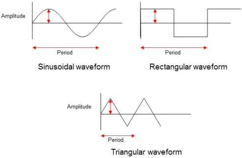

Principles of jitter injection
On a PS1600 system, you can systematically vary the edge positions of the currently active timing set by defining and activating a jitter set. This is done without any CTIM instruction or modification of the base (spec) variables. Different pins can have different jitter definitions within the same jitter set. Jitter injection is only allowed for drive pins.
The basic idea is to define a sequence of offsets from the delays that are specified in the primary timing set. The hardware then successively activates each of these offsets for the same period of time.
You can either define the jitter modulation waveform (the offset sequence) manually, or use a predefined waveform. The distance between two offset changes, which is always the same in one waveform, can either be specified explicitly by a period factor (only for user defined sequences), or implicitly by defining the length of the total jitter period (mainly for predefined waveforms).
For predefined waveforms, you can also define the amplitude.
Processing of the offset sequence is iterated in a loop which can be configured by the user. The loop can either run continuously across functional tests, or it can be stopped after each functional test and be restarted with the next test. A third, auxiliary, option is to suppress execution of the jitter loop.
This global loop configuration can be locally overruled with the JTIN sequencer instruction, which serves to start and stop jitter injection from within a pattern. This allows you, for example, to inject jitter selectively even when it is globally suppressed. JTIN is only effective in the functional test in which it is issued. At the start of the next test, the global configuration will be reactivated.
Jitter injection is configured in a jitter set, which is defined with the JSDF and JSCF commands. Jitter injection is activated and stopped by defining a primary jitter set or canceling the current primary set, both with JSPR. If no primary jitter set exists, the JTIN instruction is ignored.
The jitter setup data can be organized in two different ways, which are not completely equivalent. For more information see Two ways of organizing jitter setup data.
Jitter injection for Smart Scale, STD and STDDIFF
- Start and stop of jitter injection can be locally controlled from within the pattern with the JTIN instruction.
- There are 4 predefined waveforms, SINUSOIDAL (or SINE, depending on the setup format), RANDOM, RECTANGLE, and TRIANGLE.
- The jitter period and period factor depend on the clock resolution of the primary timing. There is a query JSWF? which allows you to check this dependency.
- The specified offset sequence of a user defined waveform defines the actual delays, and therefore the peak-to-peak value of the waveform is in this case already determined by the specified list.
For details see the descriptions of the JSCF command or the JITTER_INJECTION_PINS API.
Related Test Method APIs
Jitter can be programmed with the following APIs:
Example

These are three of the four predefined jitter modulation waveforms that are available on a Smart Scale system.
Functional changes
- Introduced in SmarTest 7.0.1
- SmarTest 7.3.1: User defined jitter waveforms are now supported for FASTDIFF pins.